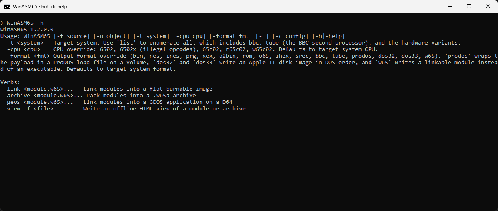
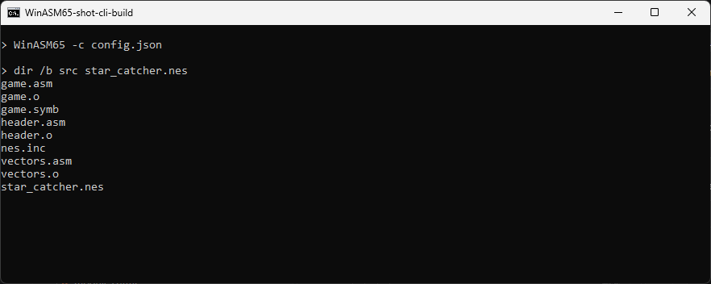

Getting started
Build the solution, learn the command line, assemble a first program and a first multi-file project, and know what every file that appears beside your sources is for.
Build the solution
WinASM65 is a .NET 8 solution. You need the .NET 8 SDK; nothing else is required to build the assembler. From the repository root:
dotnet build WinASM65.sln # compile every project
dotnet test WinASM65.sln # run the test suites
dotnet run --project WinASM65 -- -h # run the assembler without installing itThe assembler lands in WinASM65/bin/Debug/net8.0/WinASM65.exe. For a single executable that runs on a machine without .NET installed:
dotnet publish WinASM65 -c Release -r win-x64 --self-contained true -o build/The project file sets the version (1.2.0 at the time of writing), which the program prints on the first line of its help. Its only package dependency is Newtonsoft.Json, used to read config.json and to write the symbol side files.
The examples below call the program WinASM65. Put the build output on your PATH, or replace the name with the full path to WinASM65.exe, or with dotnet run --project WinASM65 --.
The command line
Run with no argument, or with -h / -help, the program prints its usage:


WinASM65 -h: the version, the usage line, the target options and the module verbs.How a command line is read
Program.Main builds one CommandLineApplication out of its collaborators (an assembler factory, the JSON configuration reader, the BinaryCombiner, the console and the ExecutablePublisher) and calls Run(args). Run first looks at the first argument: if it is a verb, the rest of the line goes to that verb and nothing else is parsed. Otherwise the options are read in one pass and the assembly path runs.
Options of the assembly path
| Option | Value | What it does |
|---|---|---|
-f | source file | Assembles one source. When -o is absent the output is the source path with its extension replaced by .o. |
-o | output file | Where the single source's output goes. With a target format other than bin, this file holds the executable (for example a PRG), not raw bytes. |
-l | none | Writes a .lst listing beside each source assembled, in single-file and project mode. |
-t, -target | system id | Selects a system of the catalog: CPU, default load address, output format, hardware symbols. -t list prints the catalog and exits. |
-cpu | CPU name | Overrides the CPU of the system. |
-format | format name | Overrides the output format of the system. |
-c | config.json | Reads a project: its Target, Input and Output sections. Every key is listed in the config.json reference. |
-h, -help | none | Prints the help and exits with 0. |
An unknown option is ignored silently: the parser is a switch with no default branch. The program returns 0 on success and 1 on any error.
-t: the target system
A target chooses three things at once: the CPU, the address code is assembled at when the source has no .org, and the container written around the bytes. Without -t (and without a Target section) the target is raw: 6502, no load address, plain binary. Identifiers ignore case, - and _, so apple-2e is apple2e.
> WinASM65 -t list
Known 6502 systems (CPU + executable format):
apple2 cpu=6502 format=a2bin load=$0800
apple2e cpu=65c02 format=a2bin load=$0800
atari2600 cpu=6502 format=rom rom=4096
atari8 cpu=6502 format=xex load=$0600
bbc cpu=6502 format=bbc load=$0E00
c64 cpu=6502 format=prg load=$0801 hw=c64/6581
nes cpu=6502 format=ines hw=nes/ntsc
raw cpu=6502 format=bin
tube cpu=6502 format=tube
… (37 entries in all)The complete catalog, and how a target is resolved, is on the Targets page. Each system also predefines its hardware registers as symbols, so a NES source can write lda PPUSTATUS without declaring it.
-cpu: the instruction set
| Name | Also accepted | Instruction set |
|---|---|---|
6502 | nmos, nmos6502 | The documented NMOS 6502. |
6502x | nmos6502x, 6502illegal | 6502 plus the stable illegal opcodes. |
65c02 | cmos | The CMOS 65C02. |
r65c02 | rockwell | 65C02 plus the Rockwell bit instructions (BBR, BBS, RMB, SMB). |
w65c02 | w65c02s, wdc65c02 | Rockwell set plus STP and WAI. |
An unknown name stops the run: Unknown CPU 'z80'. Use 6502, 6502x, 65c02, r65c02, w65c02. The CPUs page describes the tables.
-format: the container
The names registered in ExecutablePublisher are bin, ines, prg, xex, a2bin, rom, o65, ihex, srec, bbc, tube, prodos, dos32 and dos33. One more name, w65, is handled by the command line itself: it writes a relocatable module instead of an executable (see Modules). Every format is described in the format table.
The help text also lists nes among the formats, but no format of that name is registered: -format nes fails with Unknown output format 'nes'. The iNES format is ines; the system is -t nes.
Verbs
A verb is the first argument. Each has its own options, and its own -h.
| Verb | Usage (from its help) | Defaults |
|---|---|---|
link | WinASM65 link <module.w65>... -o <image> [-format <fmt>] [-shift <n>]; also accepts -cpu. Inputs may be .w65a archives. | -o out.bin, -format bin |
archive | WinASM65 archive <module.w65>... -o <lib.w65a> [-ref <other.w65a>...] | -o lib.w65a |
view | WinASM65 view -f <module.w65|archive.w65a> [-o <report.html>]; the input may also be given without -f. | output: the input with .html |
geos | WinASM65 geos <module.w65>... -o <disk.d64> [-name <n>] [-disk <n>] [-id <nn>] [-start <addr>]; also -author, -description, -shift. | -o out.d64, name APPLICATION, disk GEOS DISK, id 01 |
basic | WinASM65 basic -f <program.bas> -o <file> -dialect <name> [-format <container>] [-list <file>] | -dialect applesoft, -format bin, output: the input with .bas.bin |
link, archive and view are described on Modules, linker, viewer; geos and basic on Targets. The general help does not mention basic; WinASM65 basic -h does.
A first program
A source that sets the C64 border colour. It defines its own constant, places itself with .org, and uses a label:
; hello.asm - change the border colour, then return to BASIC
BORDER = $D020
.org $C000
start:
lda #$06 ; blue
sta BORDER
rtsRaw bytes
With no target the output is the bytes and nothing else:
> WinASM65 -f hello.asm -l
> dir /b
hello.asm
hello.lst
hello.o
hello.symbhello.o holds six bytes, A9 06 8D 20 D0 60. Because of -l there is also a listing, with the address, the bytes and the source line side by side; a constant shows its value instead of an address:
; hello.asm - change the border colour, then return to BASIC
D020 = BORDER = $D020
C000 .org $C000
C000 start:
C000 A9 06 lda #$06 ; blue
C002 8D 20 D0 sta BORDER
C005 60 rtsand a symbol file, the JSON table of every global name the source defined:
{"BORDER":53280,"start":49152}A real executable
The same source as a Commodore 64 program:
> WinASM65 -t c64 -f hello.asm -o hello.prghello.prg is 00 C0 A9 06 8D 20 D0 60: the PRG format puts the load address in front of the code, and that address is $C000, the one the code was assembled at. Every format that writes an address prefers the real origin of the assembly over the target's default. Without the .org, the assembler would have started at the target's load address, $0801 for the C64.
Internally, the assembler first writes the raw bytes to the -o path, then ExecutablePublisher.Publish rewrites that file in the target's format, using the OriginAddress the assembly reported.
When the source is wrong
Errors are printed one per line as Line N - File F - Type message, and the exit code is 1. A name nobody defines is an error in single-file mode, because no later file could provide it:

A first project
A program of several files is a project: a config.json that lists the units to assemble and the files to put together into the final image. A minimal one, with a main unit that calls a routine of a library unit (every other key, such as the Target section, is in the config.json reference):
; main.asm ; lib.asm
.org $8000 .org $8100
reset: init_screen:
jsr init_screen lda #$00
jmp reset rts{
"Input": [
{ "FileName": "main.asm", "Dependencies": ["lib.asm"] },
{ "FileName": "lib.asm", "Dependencies": [] }
],
"Output": {
"ObjectFile": "out/rom.bin",
"Files": [
{ "FileName": "main.o", "Size": "$100" },
{ "FileName": "lib.o" }
]
}
}> WinASM65 -c config.jsonBoth units are assembled; main.asm uses init_screen, which it finds in lib.symb because it declared lib.asm as a dependency. Then out/rom.bin is written: main.o padded with zeros to $100 bytes, followed by lib.o, 259 bytes in all. The directory out is created if needed.
Leave lib.asm out of the Dependencies of main.asm and the build stops:
Line 0 - File main.asm - Type Undefined symbolThe repository has a complete NES project, example_nes_game: three units (engine/headers.asm, engine/background.asm, engine/vectors.asm) and the CHR data chr/mario.chr, combined into the 24,592-byte generated_Nes_Rom/game.nes. Its compile.bat deletes the previous outputs and runs WinASM65 -l -c config.json. Its configuration is explained in The committed example.


WinASM65 -c config.json: one object file per unit, a symbol file for each unit that defines global names, and the image named by Output.ObjectFile.On the command line, every path in config.json is relative to the current directory, not to the directory of the configuration: run the build from the project directory. The VS Code extension and the monitor build through ProjectSession, which resolves paths against the configuration's own directory.
The Projects and segments page explains the configuration (with a reference of every key), the two-phase resolution of names across units, and the combiner.
Output files
A build leaves several files beside its sources. Their names come from SideFiles.BaseNameOf: the source path with its extension removed, so engine/background.asm gives engine/background.o, engine/background.symb and so on.
| File | Written when | Content |
|---|---|---|
.o | Every assembly (or the -o / OutputFile name). | The emitted bytes, back to back, with no header. In single-file mode with a target format, the same path is then rewritten as the executable. |
.symb | The source defined at least one global name. | JSON object, name → value. Local (@loop) and anonymous (-/+) labels are left out, so a unit never resolves its own anonymous label to another unit's. |
.Unsolved | Names were still unknown at the end of the file. | JSON: the constants whose value depends on an unknown name, with their dependency counts. |
.UnsolvedExpr | Same. | JSON: the places in the object file that hold a placeholder, keyed by position, with the expression to evaluate there. |
.lst | -l was given. | Address, bytes and source, as shown above. In a project, one per unit. |
| the image | -c with an Output section. | Output.ObjectFile: the combined files, in the target's format. |
.w65 | -format w65. | A relocatable module; the source must declare at least one .export or .import. See Modules. |
The .Unsolved and .UnsolvedExpr files are the hand-off between the two phases of a project build. When the orchestrator has resolved a unit, it rewrites the unit's .o and deletes both files; if they are still there after a build, that build failed. See How units are resolved.
The listing is named differently from the other side files: ListingService cuts the source path at its first dot, not at its extension. For a path such as ..\src\main.asm or C:\dir.v2\main.asm the .lst therefore lands somewhere unexpected. Run the build from the project directory with plain relative names, as the examples do.
Where to go next
Syntax reference
Directives, expressions, macros, local and anonymous labels, and the accepted forms from other assemblers.
VS Code
Build with a task, see errors as you type, and press F5 to debug the project in Mesen2.
Monitor
The terminal monitor: live RAM and ROM, breakpoints and stepping on a running emulator.
Also: the config.json reference, Targets and formats for every system and container.